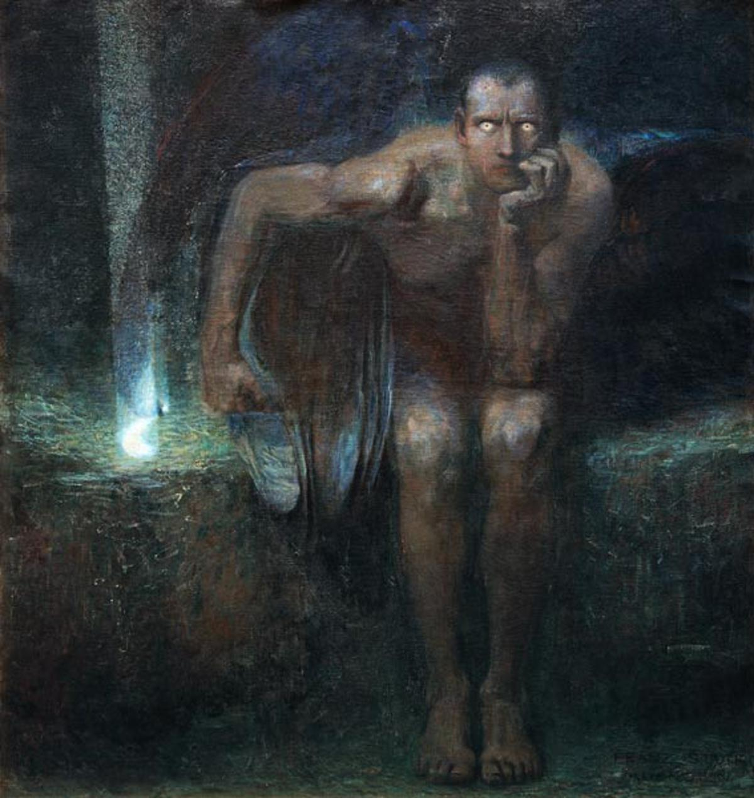

"Souls on the Banks of the Acheron" is a poignant painting by Austrian artist Adolf Hirémy-Hirschl, created in 1888. The work, executed in oil on canvas, measures 120 × 150 cm. It vividly depicts a scene from Greek mythology, where the souls of the dead wait on the banks of the Acheron, one of the rivers in the underworld. This dramatic painting captures the transitional moment between life and the afterlife, highlighting Hirémy-Hirschl’s expert use of light and shadow to evoke a sense of foreboding and melancholy. Each figure is rendered with great detail, conveying a range of emotions as they await their passage to the next realm, reflecting the artist’s skillful composition and emotional depth.
By: Adolf Hirémy-Hirschl
Read more

"Lucifer" is a painting completed in 1890 by the German artist Franz von Stuck, a key figure in the Munich Secession movement. This work belongs to Stuck's "dark monumental" period and portrays a striking image of a "man-demon." The painting, with dimensions of 161 × 152.5 cm (63 × 60 inches), is a powerful representation of Lucifer, depicting him as both a formidable and tragic figure. Stuck's use of dramatic contrasts and detailed textures enhances the sense of menace and intensity, capturing the complex interplay between beauty and darkness. The composition and color palette reflect Stuck's fascination with mythological and symbolic themes, showcasing his skill in conveying psychological depth and emotional impact.
By: Franz von Stuck
Read more

"The Voyage of Life" is a series of four profound paintings by American artist Thomas Cole, completed in 1840 and later reproduced with minor alterations in 1842. This iconic series serves as a powerful allegory for the journey of human life through its four main stages: Childhood, Youth, Manhood, and Old Age. Each painting depicts a voyager navigating a boat on the River of Life, symbolized by the mid-19th-century American wilderness. Accompanied by a guardian angel, the voyager’s journey is intricately linked to the changing landscapes and seasons, reflecting the evolving nature of human existence.
In Childhood, the infant emerges from a dark cave into a vibrant and lush world, symbolizing the purity and promise of the beginning of life. In Youth, the boy takes control of the boat, steering it toward a radiant castle in the sky, representing the ambition and idealism of youth. The phase of Manhood portrays the adult facing turbulent waters and a threatening landscape, relying on prayer and faith to overcome life’s challenges. Finally, in Old Age, the elderly man, guided by the angel, crosses the serene waters of eternity, symbolizing the peaceful transition to the afterlife.
Each painting measures 72.4 x 101.6 cm (28.5 x 40 inches). The artworks are notable for their dynamic perspectives, with each stage showing a reversal in the direction of the boat compared to the previous scene. This dynamic approach enhances the narrative depth, illustrating the cyclical nature of life and the spiritual journey inherent in each stage. Cole’s mastery in the use of light, color, and landscape not only emphasizes the emotional and symbolic content but also captures the essence of the human condition as perceived in his era.
By: Thomas Cole
Read more